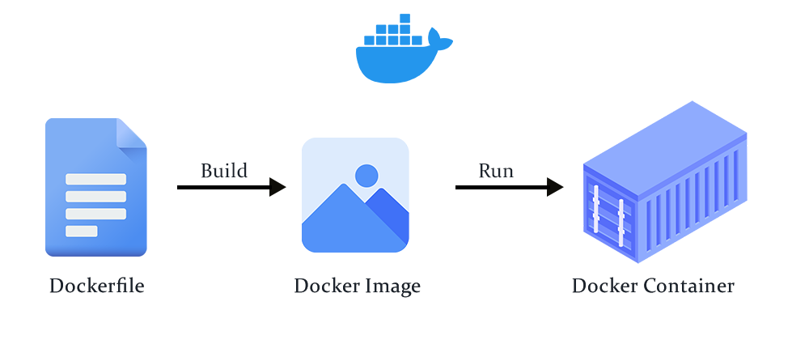

Antes do push, o laptop é a primeira pipeline. Hooks, Husky, Docker e a imagem que vai para o registry.
Aula invertida, 2 horas, bem prática. Vocês leram o auto-estudo, aqui a gente roda. Quatro blocos, dois hands-on grandes, fechamento curto.
| Bloco | Atividade | Duração |
|---|---|---|
| 10h00, Daily Time | Check-in da sprint, cronômetro de 15 min | 15 min |
| 10h15, Bloco 1 | Git hooks, Husky, scanner de secrets, hands-on A | 30 min |
| 10h45, Bloco 2 | Virtualização, Docker, Dockerfile, hands-on B | 45 min |
| 11h30, Bloco 3 | Registry, vulnerabilidades, demo com Trivy | 20 min |
| 11h50, Fechamento | Quiz, checklist antes do push, auto-estudo | 10 min |
Como está a sprint? O que já está pronto do que ficou combinado na Aula 04, MR aberta, revisão feita, triagem do Sonar? Quem ficou travado diz em uma frase. Uma volta rápida, sem rodeio.
No fim da aula, cada dupla sai com três coisas funcionando no próprio repositório: um hook que barra `console.log`, um hook que barra secret e uma imagem Docker da aplicação rodando localmente. Os objetivos refletem essa entrega.
Configurar Husky, lint-staged e scanner de secrets em projeto Node, com os quatro hooks do Git na ponta do dedo.
Escrever um Dockerfile que empacote uma aplicação Node, com multi-stage build e `.dockerignore` bem pensados.
Rodar um scanner de CVE na imagem gerada e ler o resultado sem se assustar com o número total.
Enxergar como hook local, build reprodutível e scan de imagem viram política de merge na Aula 06.
Na Aula 04 a gente olhou qualidade como processo: revisão humana, análise estática com Sonar, IA como terceiro revisor. Todo esse controle aparece depois que o código chega no repositório remoto. A pergunta desta aula é uma só: o que deveria ter acontecido antes?
Defeito pego no laptop custa segundos. O mesmo defeito pego na pipeline custa minutos, porque o dev já trocou de contexto. Em produção custa o dia de alguém. A distribuição de onde a barreira fica define quanto a engenharia gasta em retrabalho.
A aula de hoje está organizada em três camadas de validação local. Cada uma pega um tipo de problema diferente. Quem pula qualquer uma delas está pagando pedágio mais caro na pipeline.
Formatação, lint, teste rápido e mensagem padronizada. Husky e lint-staged. Roda em segundos, barra o commit se falhar.
TruffleHog ou Gitleaks como hook. Varre o diff, barra se detectar credencial. Última chance antes do histórico do Git.
Se a imagem Docker não builda no laptop, não vai buildar no CI. Dockerfile reprodutível elimina "na minha máquina funciona".
Empurrar feedback para o mais cedo possível. O desenvolvedor fica no mesmo contexto, a correção é barata, o ciclo se fecha rápido. Shift-left não é buzzword, é matemática de custo por tempo de detecção.
Quatro hooks, Husky, lint-staged, scanner de secrets. Vocês saem da sala com isso rodando no repo.
Git tem mais de dez hooks. Na prática do dia a dia, quatro resolvem 95% dos casos. Dois rodam no cliente (laptop), dois no servidor. Todos são scripts shell comuns na pasta .git/hooks. Husky só empacota esses scripts em uma configuração versionável.
Roda antes de o commit ser criado. Bloqueia se o lint quebrar ou o teste falhar. É o 80% do uso.
Valida a mensagem do commit. Lugar natural do commitlint, forçando Conventional Commits.
Antes de enviar ao remoto. Bom para rodar a suite completa, teste de integração, coisas mais demoradas.
Roda no servidor Git antes de aceitar o push. Aqui mora política: proteção de branch, regras organizacionais.
Abre .git/hooks/pre-commit.sample em qualquer repositório clonado. É shell. Husky versiona esses scripts na pasta .husky/ do projeto, então toda a equipe herda o mesmo comportamento ao clonar. Sem Husky, cada dev tem o próprio hook, o que já é ter nenhum.
No repositório da Sprint, três pacotes trabalham juntos. Cada um resolve uma fatia do problema e nenhum substitui o outro. O arquivo .husky/pre-commit chama o npx lint-staged, que por sua vez consulta o package.json para saber o que rodar em cada tipo de arquivo.
Instala os hooks na pasta .husky/ e garante que o Git use eles. Configuração mora no repo, não no laptop.
Roda comando só nos arquivos do stage. Editou dois arquivos em cem, ele rodou lint em dois. Feedback em segundos.
Valida a mensagem contra a regra Conventional Commits. feat:, fix:, chore:. Commit vago não passa.
// package.json, trecho do lint-staged
"lint-staged": {
"*.{js,jsx,ts,tsx}": ["eslint --fix", "prettier --write"],
"*.{md,json}": ["prettier --write"]
}Um AWS_SECRET_ACCESS_KEY vazado no Git é caro de remover depois. BFG, filter-branch, rotacionar a credencial no provedor, tudo isso dá trabalho e assusta auditoria. Melhor barrar antes. Dois scanners dominam o mercado hoje, com filosofias diferentes.
O repositório do módulo vem com TruffleHog configurado como hook pre-commit via Husky. Varre diff, falha se detectar padrão de credencial. No Exercício A vocês ativam, tentam commitar um secret de mentira e veem a barreira cair em ação.
github.com/josercf/inteli-2026-1B-T13-ES10-S3, rode npm install. O postinstall já ativa o Husky.AWS_SECRET_ACCESS_KEY="AKIA1234567890EXAMPLE".git add . seguido de git commit -m "wip". Observe o que acontece na terminal.feat: testar hook, commit de novo.Se o commit vago passar, seu Husky não está ativo. Rode npx husky init, verifique a pasta .husky/, tente de novo.
Toda turma tropeça nos mesmos três pontos quando ativa Husky pela primeira vez. Mapeio aqui para vocês não gastarem tempo no óbvio e pra gente discutir juntos em um minuto.
Esqueceu npm install. Sem postinstall, o Husky não engata. Sintoma: commit passa sem mensagem de lint.
lint-staged rodou em arquivo que não está no stage. Confere se você fez git add só do arquivo que editou.
Usou string com entropia baixa, tipo abc123. TruffleHog ignora. Use o prefixo AKIA que ele reconhece.
Se o hook roda só no laptop, um dev mal-intencionado desativa com git commit --no-verify. Por isso a barreira local é só uma das três. Na Aula 06 a gente volta para a mesma pergunta com scanner no servidor, que ninguém consegue pular.
Virtualização, Docker, Dockerfile, best practices. Vocês saem com uma imagem do academic-tracker rodando no laptop.
Antes de Docker, reprodutibilidade significava máquina virtual. Rodar outra cópia do sistema operacional inteira, com kernel próprio, pra isolar aplicação. Containers fazem o mesmo isolamento compartilhando o kernel do host. Menos gordura, boot em segundo, densidade alta no mesmo hardware.
Containers usam recursos do próprio kernel Linux: namespaces para separar visão de processo, rede, usuário, e cgroups para limitar CPU, memória, IO. Docker Engine orquestra essas duas primitivas. No Mac e Windows rodam dentro de uma VM leve, por isso Docker Desktop precisa de virtualização habilitada.
Três conceitos, três comandos, uma confusão bem comum. Dockerfile é a receita, arquivo de texto com instruções. Imagem é o artefato gerado pelo build, imutável, versionada por tag. Container é uma instância da imagem rodando, efêmero por natureza.

docker build. Imagem vira container no docker run.Dockerfile está para imagem como código-fonte está para binário. Imagem está para container como classe está para instância. Quando o aluno confunde, é porque esqueceu qual é a etapa imutável e qual é a viva.
Esse é o Dockerfile que a gente vai usar no exercício. Dez linhas, cinco instruções distintas, multi-stage para reduzir tamanho da imagem final. Cada número corresponde a um comentário à direita.
# 1
FROM node:20-alpine AS build
# 2
WORKDIR /app
# 3
COPY package*.json ./
# 4
RUN npm ci
# 5
COPY . .
RUN npm run build
# 6
FROM node:20-alpine
WORKDIR /app
# 7
COPY --from=build /app/dist ./dist
COPY --from=build /app/node_modules ./node_modules
# 8
EXPOSE 3000
# 9
CMD ["node", "dist/app.js"]dist do stage anterior.Errar aqui é parte do processo, por isso os três pontos abaixo aparecem em praticamente toda revisão de primeiro Dockerfile. Quem já sabe disso pula uma viagem inteira de "por que minha imagem tem 1 GB".
Copiar código antes do manifest invalida o cache de dependências a cada commit. COPY package*.json primeiro, npm ci, depois COPY . .. Economiza minutos por build.
Imagem de build tem compilador, node_modules de dev, cache. Imagem final não precisa de nada disso. Dois FROM no mesmo Dockerfile reduzem de 900 MB para 80 MB.
Sem ele, o COPY . . empacota node_modules, .git, coverage, fotos. Imagem infla, secret em .env vai junto. Três linhas resolvem 90% do problema.
Rode docker history <imagem>. Cada linha mostra o tamanho da camada e o comando que a criou. Se tem camada de 300 MB vindo de um COPY . ., o seu .dockerignore está pedindo socorro.
Dockerfile e um .dockerignore. Use o modelo do slide anterior.docker build -t academic-tracker:dev . e espere o build completar. Anote o tamanho da imagem com docker images.docker run --rm -p 3000:3000 academic-tracker:dev. Acesse http://localhost:3000/health.COPY . . antes de npm ci. Rebuilde e veja o cache falhar. Volte.docker history academic-tracker:dev e identifique a camada mais pesada. Em dupla, proponha uma otimização.Se seu Docker Desktop não subir, forma dupla com quem tem. O tempo aqui é para experimentar, não para instalar. TI foi avisado, mas aula é aula.
A pergunta que separa quem entendeu Dockerfile de quem só copiou é: o que está dentro da imagem que eu acabei de gerar? Quatro observações que quase sempre aparecem em debrief.
Imagem com 700 MB normalmente tem dev dependencies ou base Debian. Multi-stage e Alpine derrubam para 80 MB. Meça antes de otimizar.
Build que leva 3 min na primeira vez deve levar 10 segundos no segundo se só o código mudou. Se levar 3 min sempre, ordem das camadas está errada.
Container não tem systemd, cron, ssh. Roda um processo principal e morre. Se você está pensando "como entro no container e mexo", é sinal de virar código.
Se amanhã eu deletar o seu laptop, a imagem que você gerou roda igual em outra máquina? Se a resposta for "depende", a reprodutibilidade ainda não chegou. Dockerfile bem feito tira o depende.
Docker Hub, GHCR, ECR, Trivy. Imagem entra no pipeline, pipeline entra na Aula 06.
Registry é servidor de artefato com namespace, autenticação e tag. docker push envia, docker pull traz de volta. A imagem que roda em produção passou por algum registry. Quatro são os mais comuns no mundo real, com tradeoffs diferentes.
O mais conhecido, público por default. Ótimo para imagens oficiais e open source. Para privado, conta paga. Rate limit é real.
Embutidos no próprio GitHub/GitLab. Permissão herdada do repo, pipeline publica direto. Escolha natural quando o repo já está lá.
Registry do cloud provider. Privado por padrão, integra com IAM, scanner embutido. Opção óbvia se o deploy vai para essa nuvem.
Tag latest não é imutável. Duas pessoas fazem docker pull node:latest em dias diferentes e podem receber imagens diferentes. Em produção isso é uma armadilha. Use tags semânticas com versão explícita, ex. academic-tracker:1.4.2, e considere digest SHA para garantir imutabilidade absoluta.
A imagem da sua aplicação é feita de três superfícies: o código que você escreveu, as dependências do package.json e a base image. As duas primeiras a gente já escaneia com ferramentas como npm audit. A terceira é o ponto cego. node:20-alpine que você puxou na semana passada pode ter CVE novo que o de hoje já corrige.
Common Vulnerability and Exposure. Identificador padrão para falha conhecida, tipo CVE-2024-12345. Base image herda CVE do sistema operacional, do OpenSSL, do glibc.
Escaneia a imagem, casa com base de dados de CVE e lista por severidade. CLI aberta, roda em 30 segundos numa imagem pequena. Integra com pipeline.
A saída de scanner sempre assusta. O trabalho é triar: o que é exploitable no meu contexto, o que é falso positivo, o que exige atualizar base image já.
Reconstrua sua base image toda semana, mesmo sem mudar nada. docker pull node:20-alpine e rebuild da imagem. Isso já elimina 80% dos CVEs que um scanner vai reclamar. O resto é triagem consciente.
No projetor, eu rodo trivy image academic-tracker:dev na imagem que a turma produziu no Exercício B. A saída típica num Alpine recente é a seguinte. Preste atenção em severidade, pacote afetado, versão fixada e vetor de ataque.
CRITICAL e HIGH exigem ação. Atualizar base image costuma resolver os dois de uma vez. MEDIUM e LOW entram em fila de triagem. Severidade não conta contexto, então o humano ainda decide se um CVE medium em lib interna é blocker ou ruído.
Até aqui a gente montou as barreiras no laptop. Elas funcionam pela disciplina do dev. Um git commit --no-verify pula tudo. Por isso a Aula 06 pega essas mesmas validações e move para um lugar que ninguém consegue pular, o pipeline remoto.
Sonar, Semgrep, CodeQL. Mesmos apontamentos que a Aula 04 viu localmente, agora bloqueando merge por severidade configurada.
TruffleHog ou Gitleaks rodando em job da pipeline. Segundo tiro no mesmo alvo, caso algum dev tenha ignorado o hook local.
Trivy como step do GitHub Actions. Falha a build se CVE CRITICAL aparece. Política de merge passa a depender do resultado do scan.
Depois da Aula 06 você vai entender que "build verde" não é só teste passando. É código sem smell de segurança, sem secret, com imagem limpa de CVE. Qualidade vira estado observável, não promessa de revisor cansado.
Duas perguntas rápidas, cinco linhas de checklist, um tema para a semana.
Você quer bloquear um commit que contém a palavra console.log em arquivo JavaScript. Qual hook é o natural para essa validação?
commit-msg, porque valida textopre-commit, porque roda antes do commit ser criado e tem acesso ao diffpre-push, porque é antes do remotopre-receive, porque é onde política moraVocê escreveu um Dockerfile começando com FROM node:latest. Sua colega de dupla sugere trocar por FROM node:20.11.1-alpine. Qual é o ganho concreto?
latest é mais lenta para buildarlatest em produçãoCinco linhas que a equipe madura roda antes de git push sem nem pensar. Quando vocês fecharem a sprint, essa lista deveria ser automática. Se alguma ficar no manual, vira fila de nit na revisão do parceiro.
ESLint e Prettier sem warning nos arquivos tocados.
Unit tests verdes no diff, integração se afeta rota.
Mensagem em Conventional, validada por commitlint.
TruffleHog ou Gitleaks não achou nada suspeito.
docker build completa sem erro na sua máquina.
Pipeline que quebra na número 5 quando 1, 2, 3, 4 passaram é pista de que o ambiente local divergiu do runner. Dockerfile bem feito torna esse caso raro. Pipeline que quebra em 1, 2 ou 3 é sinal de que o hook não rodou, ou o dev passou com --no-verify. Nos dois casos, a conversa é outra.
A Aula 06 leva tudo isso para o pipeline remoto e fecha a Sprint 02. Três provocações curtas antes dela.
Documentação oficial, seção "Understanding GitHub Actions". Foque no que é workflow, job, step e runner. Syntax YAML mínima.
Primer curto sobre Static Application Security Testing. O post "SAST vs DAST vs IAST" da OWASP dá o panorama em cinco minutos.
Demo de 7 minutos de trivy-action no GitHub, com configuração de severidade e comportamento de falha. Chegue sabendo o que é a ação.
Um print do terminal mostrando o hook barrando o secret. Um print do docker images com a imagem do academic-tracker listada e seu tamanho. Uma linha dizendo qual foi o CVE mais sério que o Trivy apontou na sua imagem. Curto, objetivo, vira diagnóstico da sprint.
Aula 06, CI parte 2, SAST no pipeline, 13/05